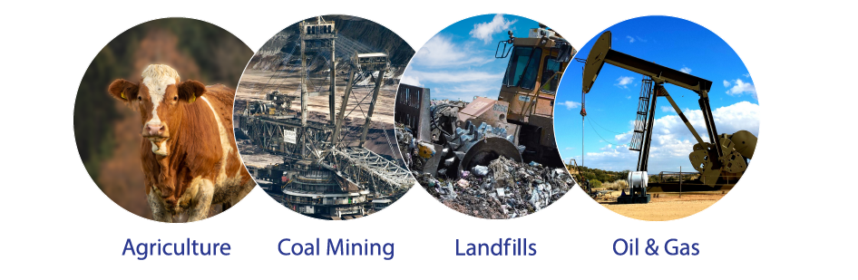
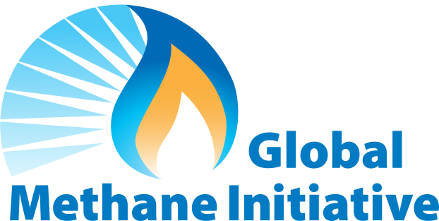
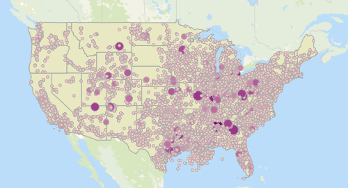

Domestic Methane Partnership
U.S. industries — along with state and local governments— work collaboratively with the U.S. Environmental Protection Agency (EPA) to implement several voluntary programs that promote the cost-effective recovery and use of methane from key sectors, including agriculture/manure management, coal mining, landfill, and oil & gas industries. These partnership programs – AgStar, the Coalbed Methane Outreach Program, the Landfill Methane Outreach Program, and the Natural Gas STAR / Methane Challenge Program, are designed to overcome a wide range of informational, technical, and institutional barriers to reducing U.S. methane emissions. Learn more here.
Support for the Global Methane Initiative
 EPA shares the expertise and experience gained through its successful voluntary domestic programs to advance methane recovery and utilization around the world as part of its commitment to the Global Methane Initiative (GMI), an effort focused on methane recovery and use from coal mining, oil and gas operations, agriculture, municipal solid waste and wastewater. Through the GMI, EPA conducts sector-specific technical assessments and shares information on best practices for methane management with countries around the world. These efforts have supported identification and implementation of more than 1,100 methane mitigation projects since 2005, which have created opportunities for U.S. businesses and investors and supported U.S. diplomatic efforts. EPA also hosts the GMI secretariat, known as the Administrative Support Group (ASG), which coordinates the activities of the Initiative as a whole, including maintaining the website, organizing meetings and events, and facilitating communications. Learn more about the U.S. Government’s international methane mitigation activities here.
National Greenhouse Gas Inventory
EPA develops an annual report, the Inventory of U.S. Greenhouse Gas Emissions and Sinks (Inventory), that tracks U.S. greenhouse gas emissions and sinks by source, economic sector, and greenhouse gas going back to 1990. The gases covered by the Inventory include carbon dioxide, methane, nitrous oxide, hydrofluorocarbons, perfluorocarbons, sulfur hexafluoride, and nitrogen trifluoride. The Inventory also calculates carbon dioxide emissions that are removed from the atmosphere by “sinks,” e.g., through the uptake of carbon and storage in forests, vegetation, and soils.
EPA publishes the draft report in February to allow for public comment prior to publishing the final report by April 15 of every year. The national greenhouse gas inventory is submitted to the United Nations in accordance with the Framework Convention on Climate Change. Learn more here.
Greenhouse Gas Reporting Program
EPA collects data on greenhouse gas emissions, including methane, from individual facilities and suppliers of certain fossil fuels and industrial gases through the Greenhouse Gas Reporting Program (GHGRP). For reporting year 2016, over 8,100 facilities and suppliers reported to the GHGRP. EPA uses this facility-level data to improve estimates of national greenhouse gas emissions in the U.S. Greenhouse Gas Inventory. With EPA’s Facility Level Information on GreenHouse gases Tool (FLIGHT), members of the public can quickly and easily filter GHG data in a variety of ways, including by facility, industry, location, or gas. Learn more here.
Download The PDF